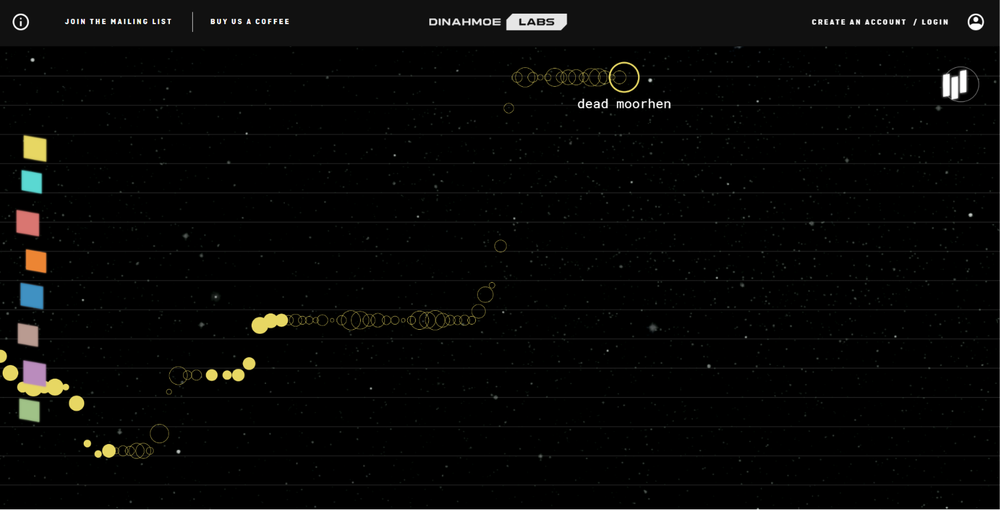
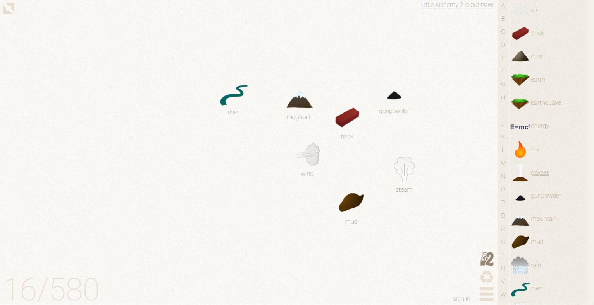
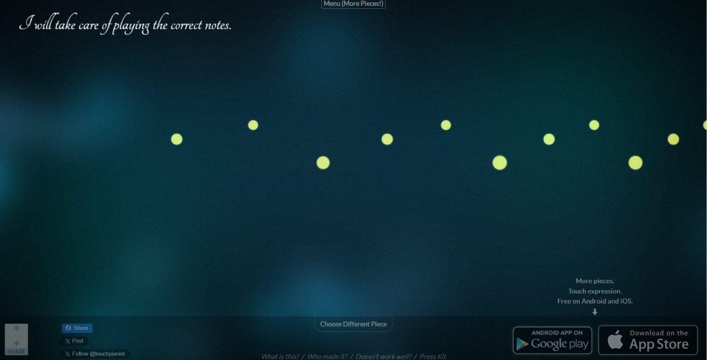

Scenario: Multiplayer Synthesizer
Prompt:
Design a synthesizer that allows 2 or more people to collaborate on a single computer.
Context:
Creative endeavours are a valuable way to spend time and bond with others. Unfortunately, they can be rather expensive and inaccessible to many. A free, online synthesizer designed for collaboration poses a new approach to this problem, exploring local cooperation over virtual.
Discussion:
The brief highlights that music is often played in collaboration with others but browser-based spaces for this are quite lacking. To address this, a key defining feature must be the ability for multiple people to use the instrument on one computer. To me, this sounds like the core principles should be encouraging casual collaboration, allowing people to bond with each other through a creative outlet. The purpose serves both in making music and bringing people closer together. This could be interpreted through multiple means, but the one that sticks out to me the most is essentially gamifying the process of making music, to make it more fun to do with other people.
I am particularly drawn towards the form and structure of rhythm games, and how the concept could be twisted into an instrument that makes the music rather than accompanying it, as is usually the case in them. Since the goal is collaboration, it doesn't suit to have users competing against each other, and it's challenging to think of ideas which do not simply involve multiple users independently making noises, but actually encourage collaboration. Perhaps an answer is in not in immediate feedback like a traditional instrument, but in a design which forces users to use each others' inputs, building off of each other, creating something greater together. As the purpose is ultimately to spend time together, I believe it is important that there is also a way to keep memories (or recordings) of what has been made.
The values central to my instrument's design will all align with this idea of fun and enjoyment, spun in an inclusive and beginner friendly manner which allows for people of all ages, technological literacy, and musical experience levels to enjoy it equally. This means that it needs to have a design that feels approachable and does not overwhelm users with options. Controls should be firmly split between users to encourage the need for teamwork, and potentially sectioned off to different areas of the screen. To tie in the purpose of fun and collaboration through playing, there could be value in a design reminiscent of games and childhood experiences.
Synopsis:
I will be designing an instrument which relies on inputs from more than one person to create music, with a focus on collaboration between users. The instrument will feature split controls across keyboard and mouse with each user controlling a different component of the overall sound.
Response - Purpose, Worth, and Framing:
This will directly respond to the brief which emphasises collaboration through the use of the instrument. The instrument will have distinctions for pitch, timing, and sound, split depending on the number of users. By having each user in control of a separate component, they are forced to work with each other rather than independently using all parts. It will not only force collaboration but also encourage communication, with users hopefully sharing ideas and intentions with each other as they discover and select different options for the instrument. To ensure that the instrument is accessible for people of all skill levels, complex musical characteristics will be simplified into buttons and sliders.
Interaction Design Analysis
Example 1: Plink

I have chosen to analyse Plink for it's almost-stave layout that affects pitch. The position of the filled orbs which appear whenever the user makes sound are very intuitively related to the pitch that is produced. Anyone with basic knowledge of written music would probably recognise the guidelines as a form of stylised stave, but even those without any knowledge of it can easily make the distinction that a high position creates a higher pitched sound, and a low position creates a lower pitched sound. This type of intuitive design is something I wish to achieve with my instrument as it will greatly increase usability and help make collaboration a more enjoyable process.
Plink is very simply designed but excellently themed, with sound matching the visual style and effects tying everything together. The combination of these aspects communicates exactly what it is capable of as a tool without the need for tutorials or complicated menus. It is an inspiring example for its simplicity as well.
Example 2: Merkur Design

All the features of Merkur Design are very stylised and pleasing to look at and interact with, but they lack clear function, and often times feel inconvenient. An example of this is the menu located on the top right. To start with, the 4 dots are not a common symbol for a menu or navigation overlay, although their position in the top right is. Given the very few interactable buttons on the page, this doesn't really pose an issue but the animation that opens the menu is long enough to be inconvenient in my opinion. The first time it opens, the spinning of the dots captures my attention, but closing it essentially plays the same animation in reverse which is definitely not as interesting. I'd like to avoid this sort of delay between input and response in my design, especially for important UI elements like menus.
Merkur Design is incredibly fun to interact with. The orb you can interact with in the centre is delightfully responsive. The very clear and obvious visual feedback is what I have chosen to focus on with this example, as it is beneficial in anything interactive. The orb changes shape dramatically in reaction to mouse position, speed, clicking, and dragging, and the response is very satisfying. The exaggerated manner of visual feedback is not the most appropriate for my project, but there is value in studying what makes it so fun, and how the same feeling could be applied to interactive elements on a much smaller scale. This is the main reason I have chosen to analyse it as my second example. Merkur does not have any auditory feedback, but the visual response is important in an instrument too. Without visual feedback, it can be harder to understand the actual effect of a change, even though you're able to tell that the sound is different.
Example 3: Little Alchemy

Little alchemy is separated into 2 very clear work sections: The area for mixing and creating new things, and the list of existing discovered items. The clear distinction between these sections can be directly translated to a digital instrument, dividing it into all available sounds, and the timing or pitch of them. The division of the workspace in this manner gives excellent structure to the whole website, and it basically works as instructions too. Where users see the list of elements on one side and the large empty space on the other, inevitably, they are going to find ways to combine some of the initial elements presented to them. This divisive layout is something that could be really useful to my multiplayer instrument, where each user controls only one section and they are forced to work with what is given to them by others.
While the split structure is an excellent reference, the overall visual design of Little Alchemy is less polished. Assets and interactable UI options suffer from low contrast colour choices and awkward sizing. These issues combined with the lack of any theming and cohesion between elements leaves the website looking and feeling very amateurish. This is something I definitely want to avoid in my own design, and I will take steps to ensure I have a cohesive and pleasing visual style throughout the making of this project.
Example 4: Touch Pianist

Touch Pianist is an example of an instrument that has been stripped back to its most basic form. The level of simplification is arguably too much, but the fact remains that the resulting interaction is still fun and leaves the user feeling like they are actually controlling the music. The simplicity makes Touch Pianist incredibly accessible, and that is the main reason I have included it as an example here. Truly anyone can use it, and it simultaneously reveals that interaction doesn't need to be complicated to be fulfilling. This can certainly be applied to the design of my own instrument. The concept of leaving the user with only one real input is very interesting to me, and it's definitely something that could be explored further when applied to a multiplayer experience.
As an instrument, Touch Pianist is incredibly limited. It doesn't have many songs, most of which the user is probably already familiar with. It lacks variety and quickly becomes boring to use. This, paired with the inoffensive but very basic visual style, makes for a rather lackluster final product.